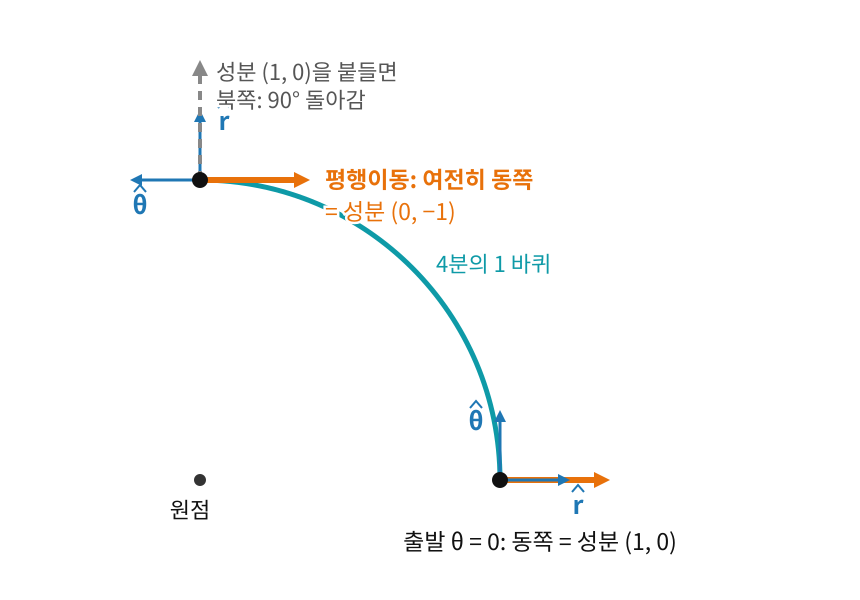

접속이 있으면 서로 다른 점의 화살표를 비교할 수 있다. 곡면 위에서 학습하는 옵티마이저는 걸음을 옮길 때마다 지난 걸음의 모멘텀 화살표를 새 자리로 들고 가야 하는데, 레이더 숫자처럼 성분만 봐서는 그 화살표가 돌았는지 알 수 없다. 그렇다면 화살표 하나를 곡선을 따라 “돌리지도 늘리지도 않고” 옮긴다는 것은, 성분으로 보면 무엇일까?
역사: 보정 항에서 평행이동으로
크리스토펠이 대수적 보정 항을 발견했다면, 레비-치비타는 거기에 기하학적 의미를 부여했다. 1917년, 레비-치비타는 크리스토펠 기호가 사실은 평행이동 — 벡터를 곡면 위에서 “회전시키지 않고” 옮기는 것 — 의 수학적 표현이라는 것을 알아챈다.
그 계기는 2년 전 발표된 아인슈타인의 일반상대성이론이었다. 이 이론이 리치와 레비-치비타의 절대 미분학을 바탕으로 삼자, 레비-치비타는 그동안 떠나 있던 이 계산법으로 돌아왔다. 1917년 논문 「임의의 매니폴드에서의 평행 개념과 그에 따른 리만 곡률의 기하학적 규정」에서 그가 노린 것은 리만 곡률을 더 간단히 계산하고 그림으로 보는 길이었다. 그는 매니폴드를 차원이 충분히 큰 평평한 공간 안에 놓고 생각해, 휘어진 공간 안에서도 "평행하게 옮긴다"는 말에 뜻을 줄 수 있고 그 규칙을 성분으로 적은 것이 바로 크리스토펠 기호라는 것을 보였다. 비슷한 때 독일의 게르하르트 헤센베르크도 벡터 계산으로 비슷한 개념에 이르렀고, 네덜란드의 얀 스하우텐은 자기가 먼저 같은 생각을 적어 두었다고 주장했지만 그의 논문이 실제로 나온 것은 1919년이다. 공식 속의 계수가 "화살표를 돌리지 않고 들고 가는 규칙"이라는 그림을 얻으면서, 접속은 계산 도구에서 기하학의 언어가 되었다.
원을 따라 동쪽 화살표 들고 가기
평면에서 먼저 보자. 반지름 1인 원 위 (r,θ)=(1,0)에서 동쪽을 가리키는 화살표를 원을 따라 4분의 1 바퀴, θ=π/2까지 들고 간다. 평면이니 화살표는 끝까지 동쪽이다. 그런데 길이 1짜리 기저 (r^,θ^)로 적은 성분은 (1,0)에서 (0,−1)로 바뀐다. 도착점에서는 동쪽이 θ^의 반대 방향이기 때문이다. 성분이 바뀐 몫은 모두 기저가 돈 몫이라, 보정된 미분은 내내 0이다. 거꾸로 성분 (1,0)을 그대로 붙들고 가면, 도착점의 r^은 북쪽이므로 화살표가 90° 돌아가 버린다.

반지름 1인 원을 따라 동쪽 화살표(주황)를 4분의 1 바퀴 들고 간다. 파랑은 그 자리의 길이 1짜리 기저 r^, θ^다. 화살표는 끝까지 동쪽이라 도착점에서 성분이 (0,−1)이 되고, 성분 (1,0)을 붙들고 가면(회색 점선) 북쪽을 가리켜 90° 돌아간다
이처럼 곡선 γ(t)를 따라 ∇γ′V=0을 지키며 벡터 V를 옮기는 것을 평행이동 (돌리지 않고 옮기기 / Parallel Transport)이라 한다. 평면에서는 그냥 화살표를 그대로 들고 가는 것이다. 곡면에서는 한 바퀴 돌아 출발점에 왔을 때 원래 화살표와 달라져 있을 수 있는데, 그 어긋남이 곡면이 휜 정도와 이어진다.
좌표로 풀어 쓰면 평행이동은 한 번 미분한 양만 든 연립 미분방정식이 되고, 출발점의 벡터만 정하면 경로 위의 벡터가 하나로 정해진다.
성분이 변하는 속도 dVk/dt가 0이 아니어도 된다. 기저가 도는 만큼(Γ 항) 성분이 바뀌어야 오히려 "진짜로는 안 돌렸다"가 된다.
아래 위젯은 반지름 r인 원을 따라 이 옮기기를 보여 준다. 수식 패널에서 성분의 편미분과 Γ 보정 항이 매 순간 정확히 상쇄되는 것을 확인하고, 반지름 r을 바꾸면 Γθθr=−r, Γθrθ=1/r이 어떻게 변하는지 보자. "성분 고정"을 켜면 보정 없이 성분만 붙들고 옮긴 가짜 평행이동이 얼마나 돌아가 버리는지 보인다.
ML에서: 곡면 위 옵티마이저의 모멘텀 옮기기
매개변수가 구면이나 쌍곡 공간 같은 곡면 위에 묶여 있으면, 모멘텀 벡터는 지금 점의 접선공간에 산다. 한 걸음 옮긴 뒤 새 점에서 이전 모멘텀을 그대로 쓰면 다른 방에 있는 화살표를 더하는 셈이라, 모멘텀을 새 점의 접선공간으로 옮겨 와야 한다. 베시뇔(G. Bécigneul)과 가네아(O.-E. Ganea)는 2019년 ICLR 논문 Riemannian Adaptive Optimization Methods에서 Adam 류의 옵티마이저를 이런 곡면 위로 옮기면서, 모멘텀을 평행이동(또는 그 근사)으로 새 점에 옮겼다. 여기서 움직이는 것은 매개변수이고, 평행이동은 "지난 걸음의 기억"을 새 자리에 맞게 옮겨 주는 규칙이다.
문제 7 — 트랙을 도는 깃발
확인 운동장의 원형 트랙을 시계 반대 방향으로 달린다. 트랙의 동쪽 끝에서 출발할 때 손에 든 깃발은 북쪽을 가리키고, 이것은 달리는 앞쪽과 같다. (가) 깃발을 땅에 대해 한 번도 돌리지 않고(늘 북쪽) 반 바퀴 달려 서쪽 끝에 왔다. 몸 기준(앞, 왼쪽)으로 적은 깃발의 방향은 출발할 때와 도착했을 때 각각 어떻게 되는가? (나) 이번에는 깃발을 팔에 묶어 몸 기준 방향을 그대로 두고 반 바퀴 달린다. 도착했을 때 깃발은 땅에 대해 어느 쪽을 가리키는가?
같이 풀기 세션 7
김민준
깃발을 안 돌렸으니까 몸 기준으로도 그대로 "앞"이죠. 출발도 도착도 (앞 1, 왼쪽 0)이요.
선생님
서쪽 끝에 도착했을 때 민준 학생은 어느 쪽을 보고 달리고 있어요?
김민준
시계 반대 방향이니까… 남쪽이요. 깃발은 북쪽이니까 등 뒤예요. 도착해서는 (앞 −1, 왼쪽 0)이네요. 깃발은 안 돌았는데 몸 기준 숫자는 바뀌었어요.
이서연
(나)는 팔에 묶었으니 깃발이 늘 앞을 가리키고, 서쪽 끝에서 앞은 남쪽이야. 땅에 대해 180° 돌아간 거지.
선생님
몸 기준 숫자를 그대로 붙드는 것과 깃발을 땅에 대해 돌리지 않는 것, 둘 중 어느 쪽이 "돌리지 않고 옮기기"일까요?
이서연
깃발을 안 돌리는 쪽이요. 그러려면 몸이 돈 만큼 숫자가 거꾸로 바뀌어야 하고요. 해석학 시간에 극좌표로 적분할 때 단위벡터를 적분 밖으로 꺼냈다가 틀린 적이 있는데, 그것도 자리마다 방향이 다르다는 걸 잊은 거였어.
문제 8 — 적도에서는 Γ가 전부 0이다
킬러 반지름 1인 구면을 북극에서 잰 각도 θ와 경도 ϕ로 쓰면, 0이 아닌 크리스토펠 기호는 Γϕϕθ=−sinθcosθ와 Γθϕϕ=Γϕθϕ=cotθ이다(문제 5에서 구한 값). 적도(θ=π/2) 위의 점에서는 Γ가 모두 0이다. (1) 적도 위의 점에서 공변미분과 성분의 편미분은 같은가? (2) 그렇다면 적도 근처의 구면은 평면과 구별할 수 없는가? (3) 적도를 따라 벡터를 평행이동시키면 성분은 어떻게 되는가?
같이 풀기 세션 8
선생님
문제 5의 값을 적도에 넣어 볼까요?
이서연
Γϕϕθ=−sin2πcos2π=0, Γθϕϕ=cot2π=0. 나머지는 원래 0이니까 적도 위에서는 정말 전부 0이네.
김민준
그러면 (1)은 같아요. 보정할 게 없으니까요. 그리고 Γ가 0이면 편미분만으로 되는 거니까, 적도 근처는 평면이랑 똑같은 거 아니에요? 적도에서는 구면 좌표가 직교좌표처럼 행동하는 거죠.
선생님
(1)은 맞아요. (2)가 문제예요. 민준 학생, 적도에서 북쪽으로 아주 조금, θ=π/2−0.1로 가면 Γϕϕθ는요?
김민준
−sinθcosθ니까… 약 −0.099요. 0이 아니네요.
선생님
적도 위에서는 0인데 바로 옆에서는 0이 아니에요. 그러면 적도에서 Γ의 값 말고 무엇을 봐야 할까요?
이서연
변화율이요. ∂θΓϕϕθ=−cos2θ이고 적도에서는 1이에요. 값은 0인데 기울기는 0이 아니에요.
선생님
바로 그거예요. 사실 어느 곡면이든 한 점을 골라 좌표를 잘 잡으면, 그 점에서 Γ를 전부 0으로 만들 수 있어요. 한 점에서 Γ=0이라는 건 "이 좌표가 그 점에 잘 맞춰져 있다"는 뜻일 뿐, 평평하다는 뜻이 아니에요. 휘어짐은 Γ의 미분에 들어 있고, 그걸 좌표에 무관한 양으로 모은 게 곡률이에요.
김민준
그럼 Γ가 0인지 아닌지로는 평평한지 알 수가 없는 거예요? 문제 2에서는 Γ가 0이 아닌데 평면이었고, 여기서는 Γ가 0인데 구면이고요.
선생님
그래요. Γ는 좌표를 바꾸면 달라지는 양이라 어느 쪽으로도 판정을 못 해요.
김민준
학습 곡선을 한 에폭만 찍어 놓고 보고서에 "수렴했다"고 썼다가, 조교님이 "한 점의 값 말고 추세를 보라"고 빨간 줄 그어 주셨던 거랑 같네요.
선생님
그럼 (3)이요. 서연 학생, 적도를 따라 벡터를 옮기면요?
이서연
적도의 속도는 ∂ϕ 방향이니까 평행이동 식은 dWk/dϕ+ΓϕjkWj=0이고, 적도 위에서는 이 Γ가 전부 0이에요. 그러면 dWk/dϕ=0이라 성분이 그대로예요. 적도 위에서는 "성분 고정"이 곧 평행이동이네요.
선생님
맞아요. 적도를 따라 옮기는 동안에는 적도 위의 Γ만 쓰이니까, 그 선 위에서 0이면 충분해요. (2)와 헷갈리면 안 되는 지점이 바로 여기예요.
김민준
그럼 적도 말고 다른 위도선을 따라가면요?
이서연
그때는 Γϕϕθ랑 Γϕθϕ가 0이 아니니까 성분이 서로 섞이겠지. 한 바퀴 돌면…
선생님
돌아왔을 때 벡터가 어떻게 되어 있는지는 직접 돌려 봐야 알 수 있어요.
문제 9 — 극 쪽으로 가면 줄어드는 모멘텀
계산 매개변수가 반지름 1인 구면 위에 묶인 모델을 모멘텀과 함께 학습한다. 가장 단순한 구현을 생각해, 모멘텀을 구면 좌표(북극에서 잰 각도 θ, 경도 ϕ)의 성분으로 저장한다고 하자. 지금 θ=60°인 점에서 모멘텀은 동쪽을 향하고 성분은 (Wθ,Wϕ)=(0,1)이다. 이번 걸음에서 매개변수가 경도선을 따라 북쪽으로 0.1 rad 움직였다(θ≈54.3°). 이 구면에서 Γθϕϕ=cotθ이다(문제 5에서 구한 값). (가) 성분을 그대로 들고 오면 모멘텀의 실제 길이는 몇 배가 되는가? (나) 평행이동으로 옮기면 Wϕ는 얼마가 되어야 하는가?
같이 풀기 세션 9
김민준
(가)는 성분이 (0,1) 그대로니까 모멘텀도 그대로죠. 1배요.
선생님
경도 방향 기저 ∂ϕ의 길이는 얼마였죠?
김민준
그 위도선의 반지름, sinθ요. 출발점에서 sin60°=0.866, 도착점에서 sin54.3°=0.812. 성분이 같으니 길이가 0.812/0.866≈0.937배예요. 한 걸음 만에 6% 넘게 줄었어요. 아무도 줄이지 않았는데요.
이서연
극에 더 가까우면 더 심하겠네. θ=10°에서 같은 걸음을 가면 sin(10°−0.1rad)/sin10°≈0.43배야. 거의 반 토막.
선생님
(나)로 가 봐요. 경도선을 따라 움직이니 경로의 속도는 ∂θ 방향이고요.
이서연
평행이동 식이 dWϕ/dθ+ΓθϕϕWϕ=0이니까 dWϕ=−cotθWϕdθ. 북쪽으로 가서 dθ=−0.1이니까 dWϕ≈0.1×0.577=0.058, Wϕ≈1.058이에요.
김민준
길이가 그대로여야 한다는 쪽으로 풀면, Wϕ×sinθ가 일정해야 하니까 0.866/0.812≈1.067이에요. 1.058이랑 1.067, 조금 다른데요?
선생님
그 식은 아주 작은 걸음에서의 변화율이에요. 0.1 rad을 한 번에 가면서 출발점의 cotθ 하나만 썼으니 한 번 어림한 거죠. 걸음을 잘게 쪼개면요?
김민준
numpy로 1000조각으로 나눠 돌리니 1.0668이 나와요. 길이가 그대로인 값이랑 같아요! 모멘텀을 그대로 두려면 성분이 늘어나야 했네요.
김민준
아까 트랙 문제랑 같네요. 깃발을 땅에 대해 안 돌리려면 몸 기준 숫자가 바뀌어야 했던 것처럼, 모멘텀을 그대로 옮기려면 성분이 바뀌어야 해요.